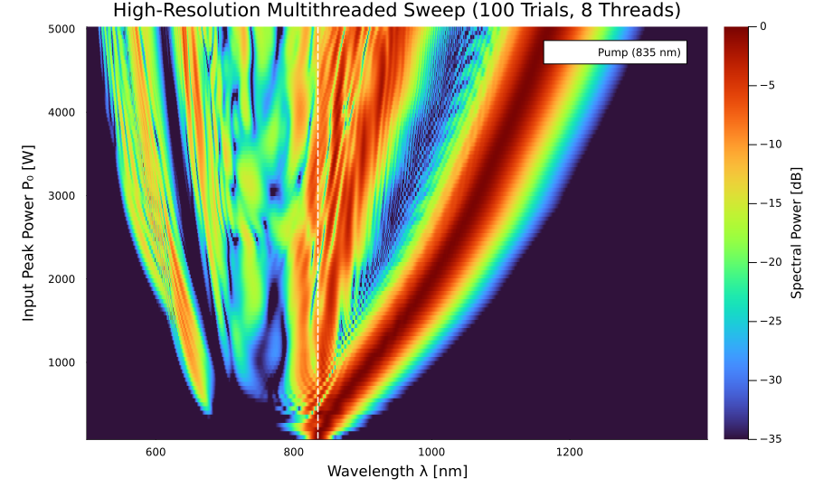

Example 10: Multithreaded Parameter Sweep — High-Resolution Supercontinuum Sweep
This example demonstrates how to perform a high-resolution 100-simulation parameter sweep over Continuous-Wave / Femtosecond Supercontinuum generation using Soliton.jl's solve_sweep API, executing concurrently across 8 Julia worker threads (julia -t 8).
Here, we sweep input peak power $P_0$ from $100\text{ W}$ to $5\text{ kW}$ across 100 parallel simulation trials in a $15\text{ cm}$ photonic crystal fiber (NKT_NL_PM_750 at $835\text{ nm}$), capturing the output spectrum across a wide $500\text{ nm}$ to $1400\text{ nm}$ spectral span (900 nm bandwidth).
🔬 Physics Highlights
- High-Resolution Power Progression ($100\text{ W} \le P_0 \le 5\text{ kW}$): Sweeping 100 fine power steps reveals the smooth, continuous transition from linear dispersion to high-order soliton fission.
- Soliton Fission & Raman SSFS Tree: Ejected fundamental solitons continuously red-shift into the near-infrared ($> 1350\text{ nm}$), while phase-matched Cherenkov dispersive waves radiate into the blue/green ($500\text{ nm} - 600\text{ nm}$).
- 8-Thread Parallel Speedup: Running 100 high-resolution GNLSE simulations ($N = 8192$ grid points per run) completes in 40 seconds on 8 Julia worker threads.
💻 Julia Implementation
using Soliton
using FFTW
using Base.Threads
# 1. Setup Fiber and Grid (Standard NKT NL-PM-750 Photonic Crystal Fiber)
medium = commercial_fiber("NKT_NL_PM_750"; length=0.15) # 15 cm fiber
grid = create_grid(2^13, 12e-12, medium.lambda0) # 835 nm center wavelength, 8192 points
# 2. Define High-Resolution Parameter Grid: Sweep Peak Power P0 from 100 W to 5000 W (100 parallel trials!)
N_trials = 100
powers = range(100.0, 5000.0; length=N_trials)
# 3. Parallel Parameter Sweep via solve_sweep (Concurrent across available worker threads)
sols = solve_sweep(powers; progress=false) do P0
return (sech_pulse(grid, P0, 50e-15), SimParams(; medium=medium, z_saves=2))
end
# 4. Extract Output Spectrum Matrix over Wide Wavelength Span [500 nm - 1400 nm]
wavelengths_nm = fftshift((2π * c ./ grid.W) .* 1e9)
sort_idx = sortperm(wavelengths_nm)
wl_plot = wavelengths_nm[sort_idx]
# Filter plot range to wide span [500 nm - 1400 nm]
mask = (wl_plot .>= 500.0) .& (wl_plot .<= 1400.0)
wl_plot = wl_plot[mask]
spec_matrix = zeros(Float64, length(powers), length(wl_plot))
for (i, sol) in enumerate(sols)
AW_out = fftshift(sol.AW[:, end])
P_db = 10 .* log10.(abs2.(AW_out[sort_idx[mask]]) .+ 1e-6)
spec_matrix[i, :] .= P_db .- maximum(P_db)
end📊 Results & High-Resolution Visualization
